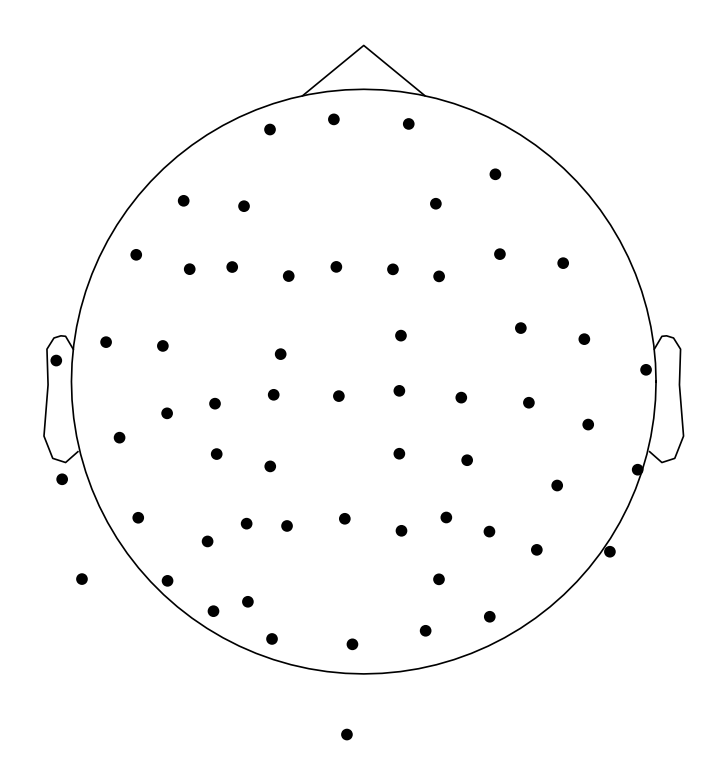
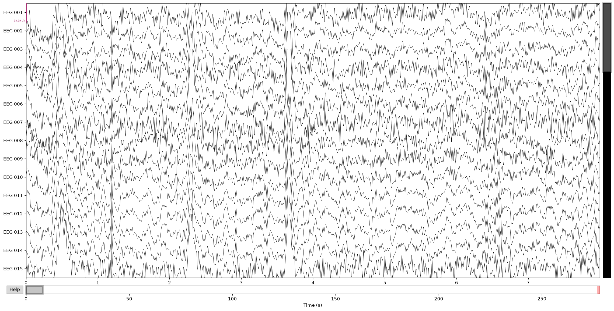

Le parcours nominal : une IRM DICOM et un EEG entrent, une estimation de sources corticales sort. On visualise chaque étape sur le sujet d'exemple sample.
L'appel unique
Tout le pipeline de surface (route FEM SimNIBS, native Windows) tient dans un appel. Chaque argument correspond à une étape détaillée plus bas.
from mri2mne.wrapper import reconstruct_sources
result = reconstruct_sources(
subject="sample",
output_dir="D:/derivatives",
dicom_dir="D:/dicom/sample", # IRM : un dossier DICOM
eeg_file="D:/eeg/sample.edf", # EEG a localiser
digitization="D:/dig/sample.elc", # positions des electrodes
simnibs_bin_dir="C:/Users/me/SimNIBS-4.5/bin",
events="find", event_id={"aud_l": 1},
tmin=-0.2, tmax=0.5, baseline=(None, 0.0),
inverse_method="dSPM", snr=3.0,
)
print(result.source_estimate_file, result.peak)Étape 1 — L'anatomie (DICOM → T1)
Le dossier DICOM est anonymisé puis converti en un unique volume T1 NIfTI. C'est la seule image dont le reste du pipeline a besoin.

sample, coupes sagittale, coronale et axiale.Étape 2 — Le modèle de tête (SimNIBS charm)
charm segmente le T1 en tissus (matière grise et blanche, LCR, crâne, scalp…) et en construit un maillage. C'est l'étape longue (~1–2 h) et le cœur de la physique : la conduction du courant dépend de cette anatomie.

Étape 3 — Électrodes et signal EEG
Les positions d'électrodes viennent de la digitisation (l'EDF n'en contient pas). Leurs libellés doivent correspondre aux canaux de l'EEG ; les écarts sont signalés, pas ignorés.

Le signal continu est lu puis filtré (par défaut 1–40 Hz) et re-référencé en moyenne commune.

Étape 4 — La réponse évoquée
Les événements découpent le signal en époques, moyennées en une réponse évoquée. C'est elle qu'on localise. La covariance du bruit est estimée sur la ligne de base pré-stimulus.


Étape 5 — La coregistration
On aligne les électrodes sur le scalp issu du maillage (ICP). C'est le point le plus sensible : une pose fausse déplace les sources sans rien casser en aval, donc le résidu est mesuré et figuré pour contrôle visuel.

Étape 6 — Le modèle direct (forward)
SimNIBS résout le problème direct par éléments finis : pour chaque point source du cortex, quel potentiel à chaque électrode. L'espace des sources est la surface corticale centrale.

Étape 7 — L'inverse et les sources
Forward, covariance et EEG se combinent en un opérateur inverse (norme minimale : dSPM ici), appliqué à la réponse évoquée pour obtenir l'estimation de sources sur le cortex.


result.peak donne la position du maximum en millimètres (repère IRM) et son instant — souvent le livrable clinique. Un rapport QC HTML est aussi écrit par sujet.
Et ensuite
Les scénarios suivants ne changent que quelques arguments de ce même appel : EEG déjà préprocessé, fichier d'événements externe, ou départ d'un T1 sans DICOM.